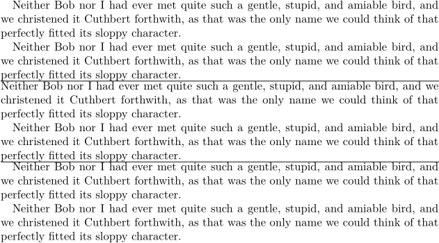

Syntax (autogenerated)
| \setupindenting[...,...] | |
| [...,...] | [+-]small [+-]medium [+-]big none no not first next yes always never odd even normal reset toggle dimension name |
Syntax
| \setupindenting[...,...,...] | |
| [...,...,...] | no yes: turn indentation on/off' |
| [...,...,...] | none small medium big dimension: size of indents |
| [...,...,...] | first next: turn indentation of first paragraph on/off |
| [...,...,...] | odd even: indent odd/even lines in \obeylines scopes |
| [...,...,...] | normal: what does this do? |
Description
Specify indentation settings. By default, indentation is both turned off and set to zero, so it must be turned on with \setupindenting[yes, small].
To get indentation after section numbers, use
\setupheads[indentnext=yes]
If you place a figure with \placefigure[auto], the auto keyword prevents the next paragraph from indenting. You can manually mark the paragraph to be indented with the \indentation command, or you can use another specifier instead of auto (top or bottom, for instance).
See also
Help from ConTeXt-Mailinglist/Forum
All issues with:
- setupindenting on the mailing list (all results)
- setupindenting on the mailing list (subject only)
- setupindenting on stack exchange
- setupindenting in ConTeXt's source
Examples
-
\definepapersize[tall][height=40cm, width=10cm] \setuppapersize[tall] \setuphead[subsubsubject][before={\blank[none]}, after={\blank[none]}] \def\test#1% { \setupindenting[yes, #1] \subsubsubject{\type{#1}} One, two\par Buckle my shoe\par \hairline } \startcolumns[n=2, rule=on] \test{none} \test{medium} \test{big} \column \test{none} \test{small} \test{-1em} \stopcolumns
-

first
and
next
first turns on indentation of the first paragraph; next turns it off. first is on by default.
-
\setuppapersize[A5] % The quotation is from "Three Tickets to Adventure", by Gerald Durrell. \def\testpar{ Neither Bob nor I had ever met quite such a gentle, stupid, and amiable bird, and we christened it Cuthbert forthwith, as that was the only name we could think of that perfectly fitted its sloppy character. \par} % `first` is on by default \setupindenting[yes, small] \testpar \testpar \hairline % to disable indentation of the first paragraph, use `next` \setupindenting[next] \testpar \testpar \hairline % to re-enable indentation of the first paragraph on again, use `first` \setupindenting[first] \testpar \testpar
- 
odd
and
even
odd and even affect raw newlines when \obeylines is in effect. \crlf is not considered a raw newline, and \startlines is not affected because \setuplines has its own odd and even keywords.
-
\setuppapersize[A6] \startcolumns[n=2, rule=on] \setupindenting[yes, small, even] {\obeylines one two three four } \column \setupindenting[odd] {\obeylines one two three four } \stopcolumns